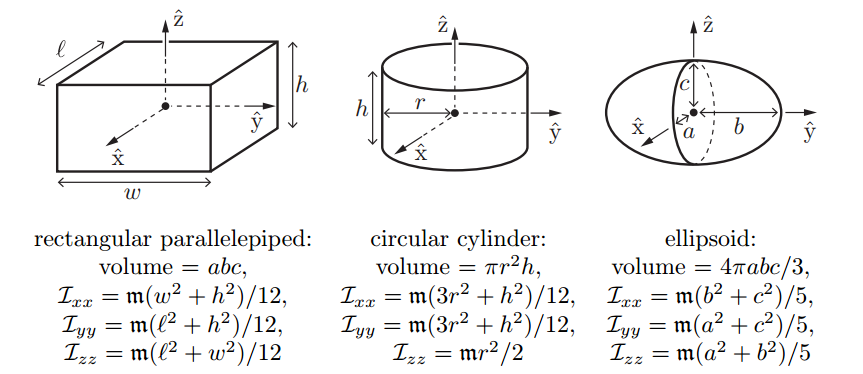
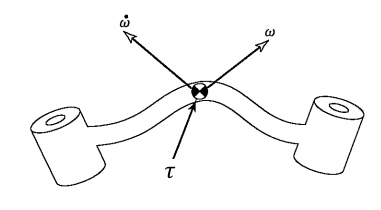

L7-2: Basic Concepts of Rigid-Body Dynamics
Hao Su
Spring, 2021
Agenda
click to jump to the section.Angular Momentum and Rotational Inertia
Angular Momentum of Point Mass
- Assume a point mass \(m\) that has a momentum \(\mv{p}^o\)
- Assume a vector from the origin of the observer's frame \(O\) to the point mass \(\mv{r}^o\)
- Angular momentum: \[ \mv{L}^o=\mv{r}^o\times \mv{p}^o \]
Rotational Inertia Preparation
\(\mv{v}\) can be decomposed into tangential velocity \(\mv{v}_t\) and radial velocity \(\mv{v}_r\)
\(\mv{r}\times \mv{v}=\mv{r}\times (\mv{v}_t+\mv{v}_r)=\mv{r}\times \mv{v}_t=\mv{r}\times (\mv{\omega} \times \mv{r})\)
Rotational Inertia of Point Mass
-
\[
\begin{aligned}
\mv{L}^o&=\mv{r}^o\times \mv{p}^o=\mv{r}^o \times (m\mv{v}^o)=m \mv{r}^o \times (\mv{\omega}^o \times \mv{r}^o)\\
&=-m \mv{r}^o\times (\mv{r}^o\times \mv{\omega}^o)=-m[\mv{r}^o][\mv{r}^o]\mv{\omega}^o
\end{aligned}
\]
- Recall that a momentum, such as \(\mv{p}\), is a product of inertia and velocity
- We define the rotational inertia similarly. The rotation inertia for a point mass is \[ \mv{I}^o=-m[\mv{r}^o][\mv{r}^o] =\begin{bmatrix} m(r_y^2+r_z^2) & -mr_xr_y & -mr_xr_z\\ -mr_xr_y & m(r^2_x+r^2_z) & -mr_yr_z\\ -mr_xr_z & -mr_yr_z & m(r^2_x+r^2_y) \end{bmatrix} \in\mathbb{R}^{3\times 3} \]
- Then, \[\mv{L}^o=\mv{I}^o\mv{\omega}^o \]
Angular momentum depends on the choice of the observer's frame!
Angular Momentum and Inertia of Rigid Body
- Let us view rigid body as a system of particles whose relative positions are fixed (no deformation).
- Define the angular momentum of a body by aggregating from volume elements: \[ \mv{L}^o=\int_{x^o \in B} \d{\{\mv{r}^o(x) \times \mv{p}^o(x^o)\}}=\int_{x^o\in B} \d{\{\mv{r}^o(x) \times m(x^o) \mv{v}^o(x^o)\}} \]
- One more step: \[ \mv{L}^o=\int_{x^o\in B} -\d{\{m^o(x^o) [\mv{r}^o(x^o)][\mv{r}^o(x^o)]\mv{\omega}^o\}}=\left(\int_{x^o\in B} -\d{\{m(x^o) [\mv{r}^o(x^o)][\mv{r}^o(x^o)]\}}\right)\mv{\omega}^o \]
Angular Momentum and Inertia of Rigid Body
- Particularly, if we choose the origin of the observer's frame \(O\) at the center of mass: \[ \mv{L}^{b}=\mv{I}^{b}\mv{\omega}^b \tag{body angular momentum} \] where \[ \mv{I}^{b}=\int_{x^b\in B} -\d{V}\{\rho(x^b) [\mv{r}^b(x^b)][\mv{r}^b(x^b)]\}\tag{body inertia} \] and center of mass \[ x^o_{cm}=\frac{\int \mv{r}^o \rho d\mathbf{V}}{\int\rho d\mathbf{V}} \tag{center of mass} \]
- Since \(\cal{F}_{b(t)}\) is tightly binded to the body, \(\mv{I}^b\) does not change w.r.t. time and is a basic property of the object.
Computation of Rigid Body Inertia
-
\[
\begin{aligned}
\mv{I}^b&=\int_{x^b\in B} -\d{V}\rho(\mv{x}^b) [\mv{r}^b(\mv{x}^b)][\mv{r}^b(\mv{x}^b)]\\
&=\begin{bmatrix}
\int\rho(r_y^2+r_z^2)d\mv{V} & -\int\rho r_xr_yd\mv{V} & -\int\rho r_xr_zd\mv{V}\\
-\int\rho r_xr_yd\mv{V} & \int\rho (r_x^2+r_z^2)d\mv{V} & -\int\rho r_yr_zd\mv{V}\\
-\int\rho r_xr_zd\mv{V} & -\int\rho r_yr_zd\mv{V} & \int\rho(r_y^2+r_x^2)d\mv{V}\\
\end{bmatrix}
\end{aligned}
\]
- Given uniform density, the integral can be computed analytically for watertight meshes
Fast Inertia Computation
- Divergence theorem! Let \(\mv{F}:\mathbb{R}^3\to\mathbb{R}^3\), \(\int_V\nabla\cdot \mv{F} dV = \oint_S \mv{F}\cdot \mv{n} d S\)
- An example: a term of \(\mv{I}\), which is \(-\rho \int_\mv{V}r_yr_zd\mv{V}\)
Let \(\mv{F}(r_x,r_y,r_z) = \begin{bmatrix}r_xr_yr_z &0 & 0\end{bmatrix}^T\) \[\nabla\cdot\mv{F} = r_yr_z\] The integral becomes \[\oint_S \mv{F}\cdot\mv{n} dS\] Now we only need to do 2D integral over triangles.
Read by yourself
Mass Properties
- Observe \( \mv{I}^b=\int_{\mv{r}^b\in B} -\d{\mv{V}}\rho(\mv{r}^b)[\mv{r}^b][\mv{r}^b] \)
- Although the origin is always at the center of mass, if we change the orientation of body frame axes, \(\mv{I}^b\) may change!
- How will it change, then?
- If we rotate the frame by \(R^T\) and obtain a new frame \(b'\), then \[ \begin{aligned} {\mv{I}^b}'&=\int_{\mv{r}^b\in B} -\d{\mv{V}}\rho(\mv{r}^b)[R\mv{r}^b][R\mv{r}^b]=\int_{\mv{r}^b\in B} -\d{\mv{V}}\rho(\mv{r}^b)R[\mv{r}^b][\mv{r}^b]R^T =R \mv{I}^b R^T \end{aligned} \] where the second equality follows \([Rr]=R[r]R^T\) for \(R\in\mathbb{SO}^3\). Again, similarity transformation!
Conclusion: Rigid-transformation does not change the eigen properties of \(\mv{I}^b\)
Mass Properties
- \(\mv{I}^b\) admits eigen-decomposition
- The eigenvectors are called principal axes.
- The eigenvalues (\(I_1, I_2, I_3\)) are called the principal moments of inertia.
- \(x_{cm}\) and principal axes form a body frame that is intrinsic to the object
- \(x_{cm}\), principal axes, \(m, I_1, I_2, I_3\) fully determine the behavior of a rigid body under external forces

(from: https://www.cnblogs.com/21207-iHome/p/7765508.html)
Quiz
Suppose an object is moving in space (rotating and translating), which of the following quantities may change during the motion. (Assume all quantities are measured w.r.t. a static spatial frame)- A. principal axes (observed from the spatial frame)
- B. \(x_{cm}\) (observed from the spatial frame)
- C. \(m\)
- D. \(I_1,I_2,I_3\)
Torque
Torque
- Consider a simple example on the right.
- Recall how we define the angular momentum \(\mv{L}^o\) for point mass: \[ \mv{L}^o=\mv{r}^o\times \mv{p}^o=\mv{r}^o \times (m\mv{v}^o) \tag{1} \]
- We have also derived that \[ \mv{L}^o=\mv{I}^o\mv{\omega^o} \tag{2} \]
- We use the time derivative of \(\mv{L}^o\) to define torque, denoted by \(\tau^o\)
- By (1), \(\tau^o = \dot{\mv{L}^o}=\dot{\mv{r}^o} \times (m\mv{v}^o)+\mv{r}^o \times \mv{f}^o=\mv{r}^o\times \mv{f}^o\), because \(\dot{\mv{r}^o}\parallel\mv{v}^o \)
- By (2), \(\tau=\frac{\d{(\mv{I}^o\mv{\omega}^o)}}{\d{t}}\)
- Torque describes how fast the angular momentum changes (from 2). Torque also relates the change with the cause: an external power input (from 1).
Example: a point mass is fixed at the end of a light stick mounted on the wall. At the moment of analysis, it has velocity \(\mv{v}\).
Torque
-
In the example of point mass, we showed the equality of two torque computations
- the change rate of \(\mv{L}\)
- the input to the system
- For general rigid-body systems, the equality is also true
- For robotic manipulation, torque is the most common description of system input

https://en.wikipedia.org/wiki/Electric_motor
Euler Equation
\[ \begin{align*} % \mv{f} &= \frac{\d{\mv{p}}}{\d{t}}=\frac{\d{(m\mv{v})}}{\d{t}}=m\mv{a} \tag{linear motion}\\ \mv{\tau}^b &= \frac{\d{\mv{L}^b}}{\d{t}}=\frac{\d{(\mv{I}^b\mv{\omega}^b)}}{\d{t}}=\frac{\d{\mv{I}^b}}{\d{t}}\mv{\omega}^b+\mv{I}^b\frac{\d{\mv{\omega}^b}}{\d{t}}=\mv{\omega}^b\times \mv{I}^b\mv{\omega}^b + \mv{I}^b\dot{\mv{\omega}^b} \end{align*} \]- We used \(\dot{\mv{I}^b}=[\mv{\omega}]\mv{I}^b\) without proof
-
An observation (example): Even if there is no torque input, if the object has a non-zero angular velocity \(\mv{\omega}^b\), then it may still have an angular acceleration \(\dot{\mv{\omega}^b}\)
- When \(\mv{\omega}^b \not\parallel \mv{I}^b\mv{\omega}^b\), i.e., \(\mv{\omega}^b\) is not along the eigenvector of \(\mv{I}^b\), \(\mv{\omega}^b\) will NOT keep unchanged
- \(\mv{\omega}^b\) will not converge (\(\dot{\omega}^b\) will never be zero). Its trajectory will form a periodic curve
- \(\mv{L}^b=\mv{I}^b\mv{\omega}^b\) is conserved
Euler Equation
\[ \mv{\tau}^b=\mv{\omega}^b\times \mv{I}^b\mv{\omega}^b + \mv{I}^b\dot{\mv{\omega}^b} \tag{angular motion} \]
A numerical experiment in SAPIEN for \(\mv{\tau}^b=0\)
(this is illustrative and there are numerical errors)